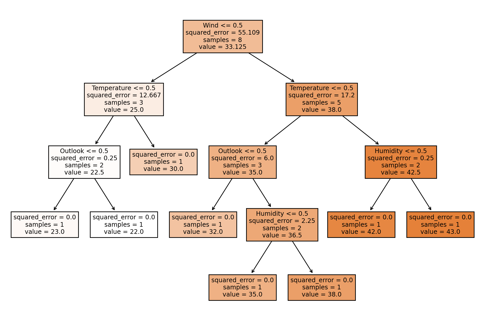

Decision Trees in Regression#
This is a supplement material for the Machine Learning Simplified book. It sheds light on Python implementations of the topics discussed while all detailed explanations can be found in the book.
I also assume you know Python syntax and how it works. If you don’t, I highly recommend you to take a break and get introduced to the language before going forward with my code.
This material can be downloaded as a Jupyter notebook (Download button in the upper-right corner ->
.ipynb) to reproduce the code and play around with it.
This notebook is a supplement for Chapter 8. Decision Trees of Machine Learning For Everyone book.
1. Required Libraries, Data & Variables#
Let’s import the data and have a look at it:
import pandas as pd
%config InlineBackend.figure_format = 'retina' #to make sharper and prettier plots
# Data from the provided table
data = {
'Day': list(range(1, 13)),
'Temperature': ['Hot', 'Hot', 'Hot', 'Cold', 'Cold', 'Cold', 'Cold', 'Hot', 'Hot', 'Cold', 'Cold', 'Cold'],
'Humidity': ['High', 'High', 'High', 'Normal', 'Normal', 'High', 'Normal', 'Normal', 'Normal', 'High', 'High', 'Normal'],
'Outlook': ['Sunny', 'Sunny', 'Rain', 'Rain', 'Rain', 'Sunny', 'Sunny', 'Rain', 'Sunny', 'Rain', 'Rain', 'Sunny'],
'Wind': ['Weak', 'Strong', 'Weak', 'Weak', 'Strong', 'Weak', 'Weak', 'Weak', 'Strong', 'Strong', 'Weak', 'Strong'],
'Golf Hours Played': [25, 30, 42, 32, 23, 35, 38, 43, 48, 12, 24, 22]
}
# Create DataFrame
df = pd.DataFrame(data)
# Display the DataFrame
df
| Day | Temperature | Humidity | Outlook | Wind | Golf Hours Played | |
|---|---|---|---|---|---|---|
| 0 | 1 | Hot | High | Sunny | Weak | 25 |
| 1 | 2 | Hot | High | Sunny | Strong | 30 |
| 2 | 3 | Hot | High | Rain | Weak | 42 |
| 3 | 4 | Cold | Normal | Rain | Weak | 32 |
| 4 | 5 | Cold | Normal | Rain | Strong | 23 |
| 5 | 6 | Cold | High | Sunny | Weak | 35 |
| 6 | 7 | Cold | Normal | Sunny | Weak | 38 |
| 7 | 8 | Hot | Normal | Rain | Weak | 43 |
| 8 | 9 | Hot | Normal | Sunny | Strong | 48 |
| 9 | 10 | Cold | High | Rain | Strong | 12 |
| 10 | 11 | Cold | High | Rain | Weak | 24 |
| 11 | 12 | Cold | Normal | Sunny | Strong | 22 |
2. Preprocessing Dataframe#
from sklearn.preprocessing import LabelEncoder
# Encode categorical variables
label_encoder = LabelEncoder()
df['Temperature'] = label_encoder.fit_transform(df['Temperature'])
df['Humidity'] = label_encoder.fit_transform(df['Humidity'])
df['Outlook'] = label_encoder.fit_transform(df['Outlook'])
df['Wind'] = label_encoder.fit_transform(df['Wind'])
Let’s look at our dataset after preprocessing:
df
| Day | Temperature | Humidity | Outlook | Wind | Golf Hours Played | |
|---|---|---|---|---|---|---|
| 0 | 1 | 1 | 0 | 1 | 1 | 25 |
| 1 | 2 | 1 | 0 | 1 | 0 | 30 |
| 2 | 3 | 1 | 0 | 0 | 1 | 42 |
| 3 | 4 | 0 | 1 | 0 | 1 | 32 |
| 4 | 5 | 0 | 1 | 0 | 0 | 23 |
| 5 | 6 | 0 | 0 | 1 | 1 | 35 |
| 6 | 7 | 0 | 1 | 1 | 1 | 38 |
| 7 | 8 | 1 | 1 | 0 | 1 | 43 |
| 8 | 9 | 1 | 1 | 1 | 0 | 48 |
| 9 | 10 | 0 | 0 | 0 | 0 | 12 |
| 10 | 11 | 0 | 0 | 0 | 1 | 24 |
| 11 | 12 | 0 | 1 | 1 | 0 | 22 |
3. Training a Decision Tree with SDR#
from sklearn.tree import DecisionTreeClassifier
from sklearn.model_selection import train_test_split
from sklearn.metrics import accuracy_score
from sklearn.tree import DecisionTreeRegressor
3.1. Splitting into X and y#
# Features and target variable
X = df[['Temperature', 'Humidity', 'Outlook', 'Wind']]
y = df['Golf Hours Played']
X_train, X_test, y_train, y_test = train_test_split(X, y, test_size=0.3, random_state=42)
3.2. Building the Decision Tree Regressor#
# Standard deviation reduction isn't a direct option in scikit-learn, so we use the default "mse" which is mean squared error
tree_regressor = DecisionTreeRegressor(criterion='squared_error', random_state=42)
tree_regressor.fit(X_train, y_train)
DecisionTreeRegressor(random_state=42)In a Jupyter environment, please rerun this cell to show the HTML representation or trust the notebook.
On GitHub, the HTML representation is unable to render, please try loading this page with nbviewer.org.
DecisionTreeRegressor(random_state=42)
3.3. Predict and Evaluate the Model#
from sklearn.metrics import mean_squared_error
y_pred = tree_regressor.predict(X_test)
mse = mean_squared_error(y_test, y_pred)
print(f'Mean Squared Error: {mse}')
Mean Squared Error: 199.5
3.4. Visualize the Tree (optional)#
from sklearn.tree import plot_tree
import matplotlib.pyplot as plt
plt.figure(figsize=(12, 8))
plot_tree(tree_regressor, filled=True, feature_names=['Temperature', 'Humidity', 'Outlook', 'Wind'])
# Visualize the decision tree
plt.show()
